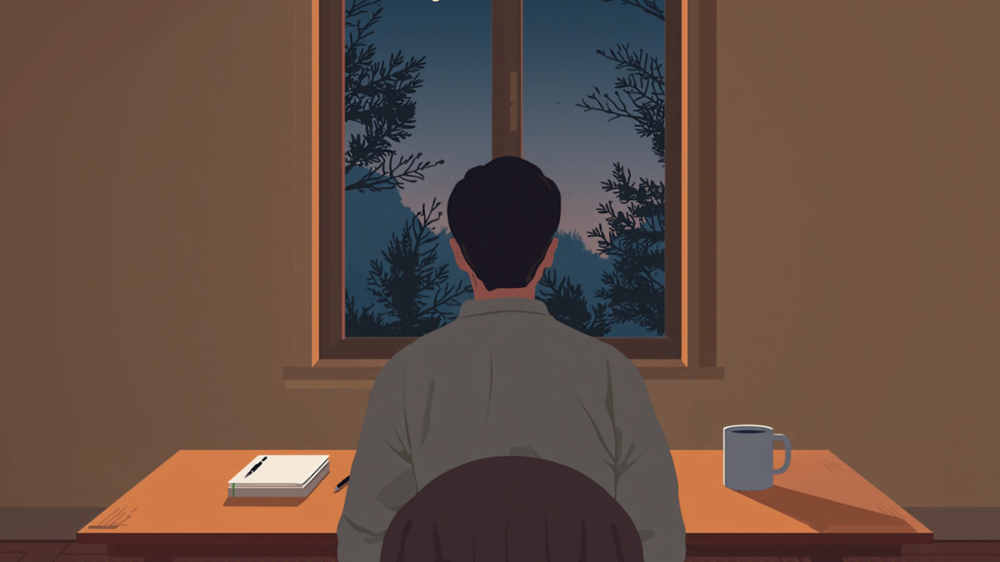
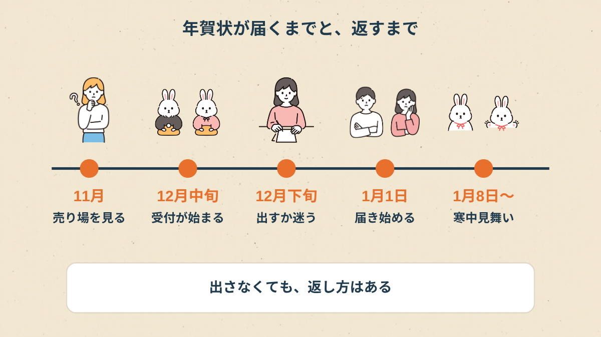
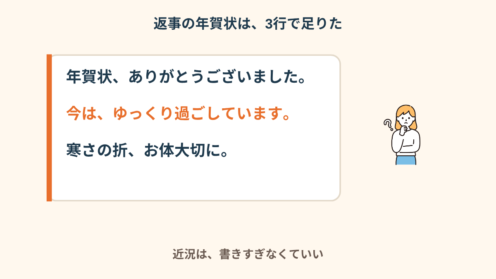
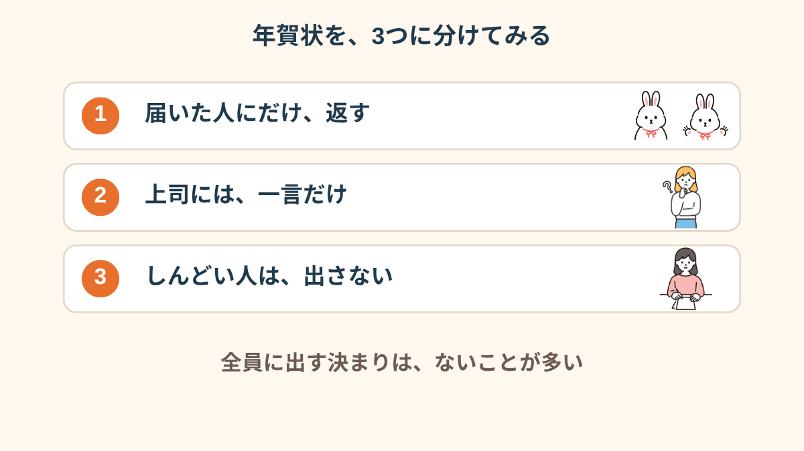
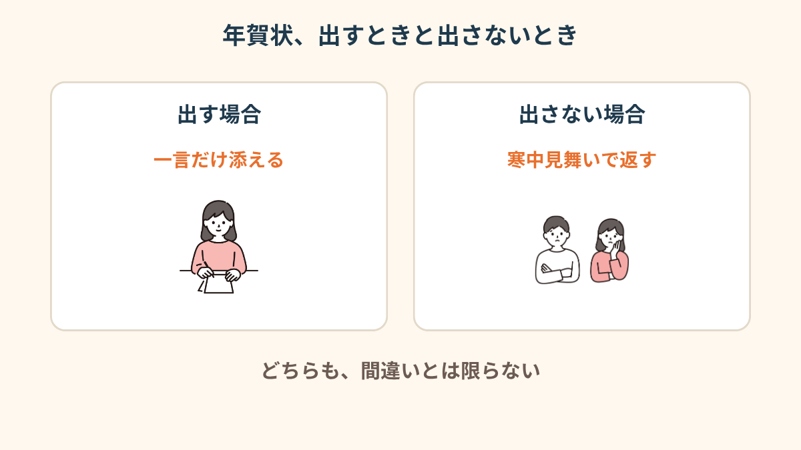
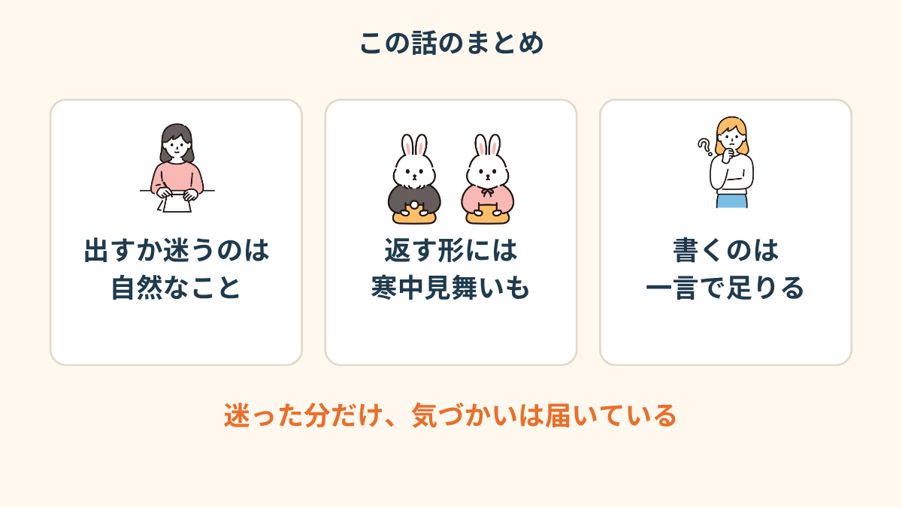
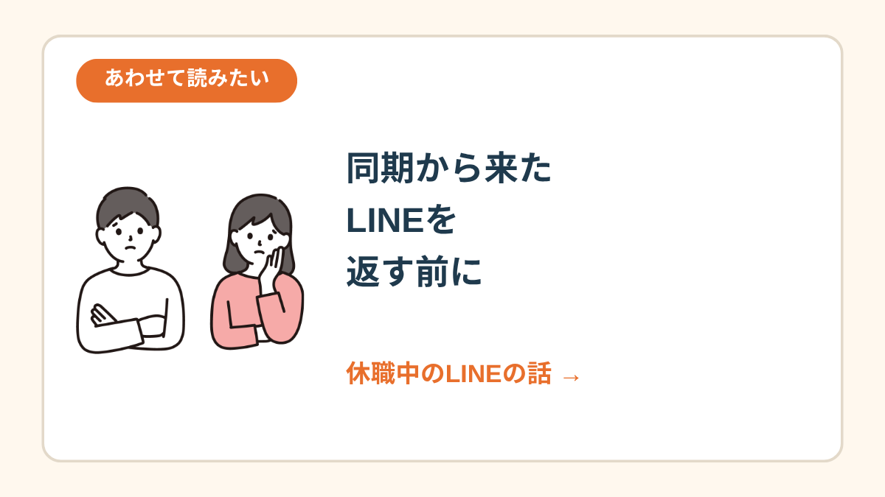

去年の私は、その前を3回、通り過ぎた。
毎年30枚くらい書いていたはずなのに、
今年は「誰に出すんだっけ」という考えしか出てこなくて。
休職して、4ヶ月目だった。
売り場の前で、手が止まった
1回目は、買い物のついでに。
2回目は、ポストに別の手紙を入れに来たとき。
3回目は、売り場の前でじっと立っていたら、店員さんに「お探しですか？」と聞かれて、「いえ」と言って出てきました。
買えなかった理由は、お金じゃない。
年賀状を書くって、「私は元気にやってます」という報告に近い気がして。
元気じゃないのに、元気そうな顔の年賀状は書けなかったんです。

あとから数えたら、毎年出していたのは職場の人が20人くらい、学生時代の友だちが10人くらい。
その全員の顔を、売り場の前で一人ずつ思い出していました。
たぶん、それがいちばん疲れた。
「年賀状って、毎年同じ人に出す習慣だったから、休職したからやめます、って言いづらくて。誰にも言われてないのに、ずっと売り場の前で固まってました」
「出さなかったら、どう思われる」が回り続けた
12月に入ると、同僚のSNSに「年賀状作りました」の写真が流れてきます。
見るたびに、胃のあたりがきゅっとなる。
出さなかったら、「あの人、休職して冷たくなった」と思われるんじゃないか。
逆に出したら、「元気になったんだ」と思われるんじゃないか。
どっちに転んでも、誰かの頭の中の私を気にしていました。

図にしてみて気づいたのは、年賀状は「元日に届かなかったら終わり」ではないこと。
出せなくても、そのあとに寒中見舞いという返し方がある。
それを知っただけで、売り場の前の息苦しさが、ほんの少しゆるみました。
「出さない年があってもいいんだ、と頭では分かってたんです。でも、休職してる自分がやると、言い訳みたいに見える気がして。だから余計に動けなかった」
出す、出さない、のあいだにある選び方
選択肢は「全員に出す」か「全員に出さない」の2つしかないと思っていました。
でも、紙に書いてみたら、そのあいだにいくつもあった。

出すなら、近況は書かず、一言だけ。
出さないなら、届いた人にだけ、あとから寒中見舞いで返す。
どちらも、相手への気持ちは変わらないんだなと思いました。

私が最終的に決めたのは、これでした。

返す言葉は、短くていい
結局、年賀状は出さずに年を越しました。
ただ、元日に届いた年賀状のなかに、上司の手書きのものがあって。
裏面の隅に、小さく「待ってるよ」と書いてあった。
うれしかったのと同時に、肩がずんと重くなりました。
「待ってる」に、何をどう返したらいいのか。
3日くらい、机の端に置いたまま。

「年賀状、ありがとうございました。今はゆっくり過ごしています。寒さの折、お体大切に。」
それを寒中見舞いはがきに書いて、1月の中ごろに出しました。
書くのにかかった時間は、たぶん5分くらい。
売り場の前で固まっていた時間のほうが、ずっと長かったです。
「近況を書こうとすると、嘘になる気がして書けなかったんです。結局『ありがとうございました』だけにしたら、あっさり返事が来て、拍子抜けしました」
元日の朝と、そのあとのこと
返事を出したあと、しばらくは「あれで良かったのかな」が顔を出しました。
でも、上司からの返しは「ありがとう、無理しないで」の一行だけ。
あれだけ悩んだことが、向こうでは一行で終わっていた。
それはそれで、ちょっと笑ってしまいました。
揺れていたのは、年賀状のやり方が間違っていたから、ではなく、気持ちが揺れる時期だったから。
そう思えるようになったのは、もう少しあとのことです。


休職中のLINEの話 →この記事に、聞いてみたいことはありますか？
「自分の場合はどうなんだろう」と思ったことを、気軽に書いてみてください。いただいた質問は個別にお返事したうえで、匿名で記事にすることがあります。